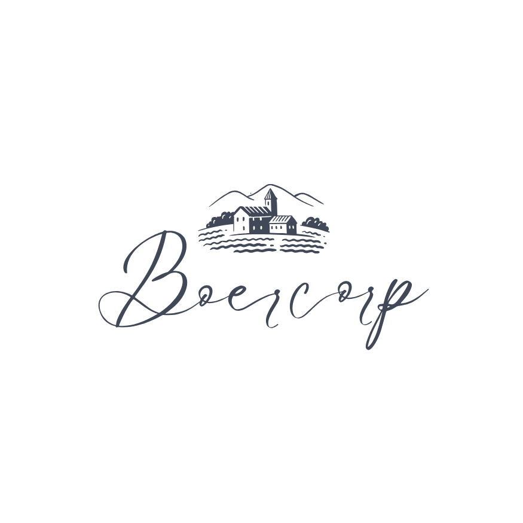
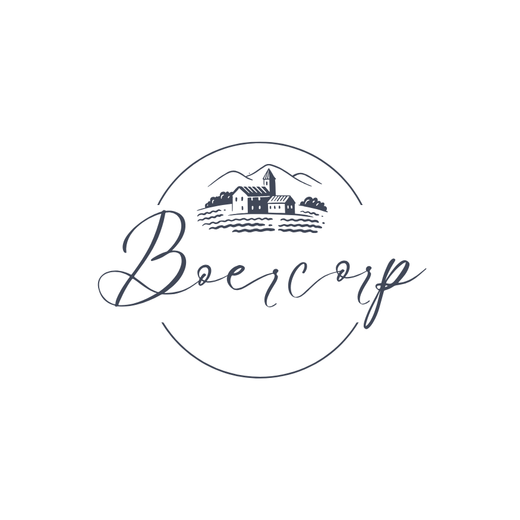
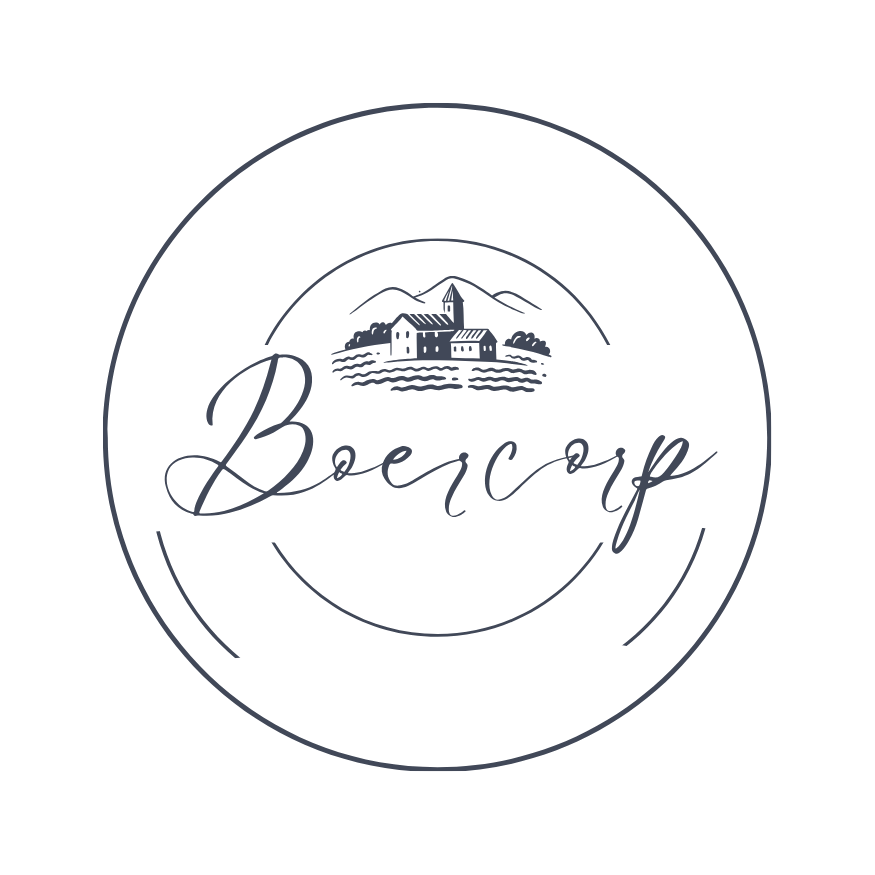

Boercorp
Brand Identity · 2022
Fresh Produce Consortium
Boercorp Farmers
Rooted in the land · Growing together

Exploring a balance between heritage, authenticity and a modern, refined identity across three directions — Heritage Seal, Modern Balance, and Contemporary Mark.

Heritage Seal

Modern Balance

Contemporary Mark

Primary

Reverse

Horizontal
A timeless illustration representing agriculture, community and the land. The farm scene anchors the brand in its roots — evoking authenticity, heritage and the honest craft of farming.
#414858
#5C6572
#7D848F
#B3B6BC
#EBE7E4
A grounded, neutral palette that conveys trust, reliability and purity — rooted in the natural tones of soil, stone and cream.
Aa
Le Jour Script
Logo · Accent
Aa
Six Caps
Headings
Aa
Lora
Body Text
The brand identity applied across packaging, dairy products and retail collateral — demonstrating versatility and real-world impact across physical touchpoints.


The Boercorp logo is built on a foundation of geometric precision and intentional proportion. Each element — the circular seal, brandmark illustration, script logotype, and consortium ring text — occupies a defined zone within the construction grid, ensuring consistent reproduction across all scales and applications.
Zone ONE — Outer Ring
The circular border and consortium text form the outer boundary. This ring provides structure and frames all inner elements.
Zone TWO — Brandmark
The farm illustration occupies the upper centre, anchoring the visual identity in agricultural heritage and community.
Zone THREE — Script Logotype
The Boercorp script sits centrally below the brandmark, forming the focal point of the seal with expressive, flowing letterforms.
Zone FOUR — Proportions
Carefully balanced proportions create a harmonious and scalable identity that reads clearly for a billboard scale.
To preserve the integrity and legibility of the Boercorp logo, a defined clear space must always be maintained around the mark. No other graphic elements, text, or imagery should encroach within this protected zone.
Clear Space Rule
The minimum clear space on all sides equals the height of the letter "B" in the Boercorp script. This applies to both the seal and horizontal lockup.
Minimum Size
The seal logo should never be reproduced too small digitally. The horizontal lockup needs to be a decent size to ensure legibility.